Colegios y cursos, rutas, vehículos con sus documentos, conductores, asignaciones, la Ruta del día del conductor y la monitora, monitoreo en vivo y cronograma.
Para administradores de la empresa de transporteVersión noviembre 2026
Contenido
El orden para configurar la operación De un vistazo
Colegios y cursos
Vehículos Documentos, novedades y gastos
Conductores y monitoras
Rutas Estudiantes y orden
Asignaciones Quién cubre cada ruta y cuándo
La Ruta del día App del conductor y la monitora
Monitoreo, historial y cronograma
Preguntas frecuentes
¿Cómo leer este manual?
Menús: Operación › Rutas. Botones: Nueva ruta. Campos: negrita. Los campos con * son obligatorios.
1. El orden para configurar la operación
Cada pieza se apoya en la anterior. Siguiendo este orden nunca te faltará una opción en las listas.
Paso
Dónde
Para qué
1. Colegios y sus cursos
Operación › Colegios
Los estudiantes y las rutas pertenecen a un colegio y una jornada.
2. Estudiantes
Personas › Estudiantes
Ver el manual Gestión de estudiantes.
3. Vehículos
Operación › Vehículos
Con capacidad y documentos al día.
4. Conductores y monitoras
Personas › Empleados
Con licencia vigente y su acceso a la app.
5. Rutas
Operación › Rutas
Qué estudiantes recoge cada ruta y en qué orden.
6. Asignaciones
Operación › Asignaciones
Qué vehículo, conductor y monitora hacen cada ruta y desde cuándo.
2. Colegios y cursos
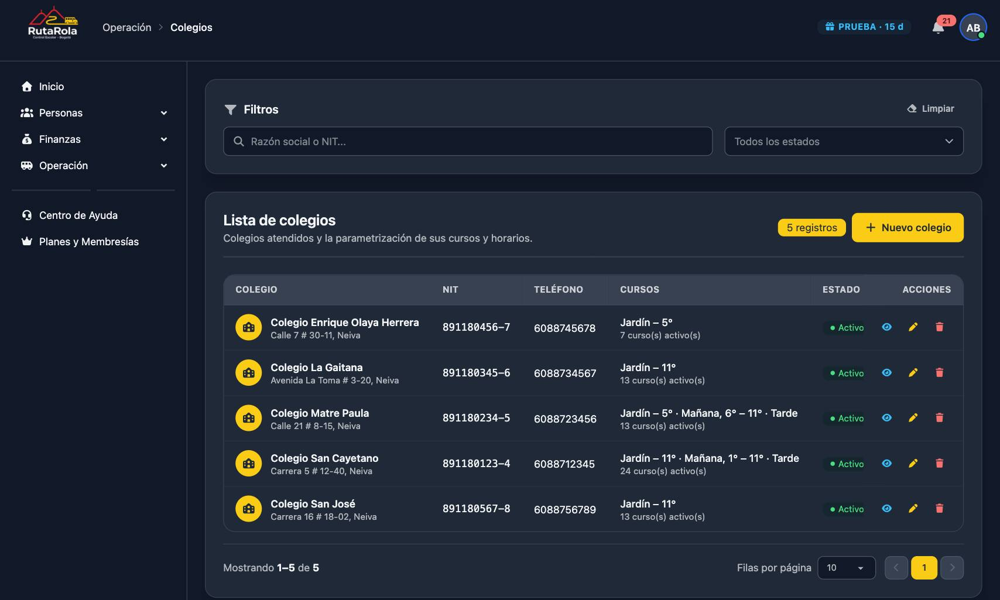
Lista de colegios.
En Operación › Colegios toca Nuevo colegio.
Datos del colegio:NIT (único), Razón social, Dirección, Teléfono y Estado.
Parametrizar cursos: un curso es un grado + jornada con su horario. Elige Un curso o Varios cursos; con Varios cursos indicas Desde y Hasta (por ejemplo, Jardín a 5°) y se crean todos de una vez.
Elige la Jornada (Mañana, Tarde, Única…), la Hora entrada y la Hora salida, y toca Agregar cursos. Repite para otras jornadas u horarios.
Toca Registrar colegio.
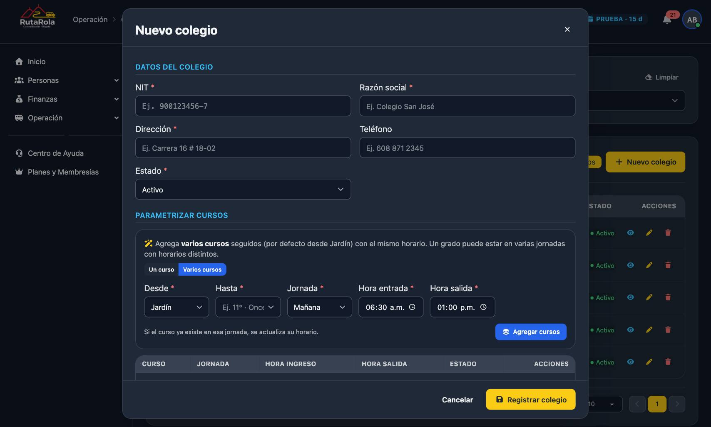
Nuevo colegio con la sección para parametrizar cursos.
Cambiar un horarioSi agregas un curso que ya existe en esa jornada, solo se actualiza su horario. Un mismo grado puede estar en varias jornadas con horarios distintos.
3. Vehículos
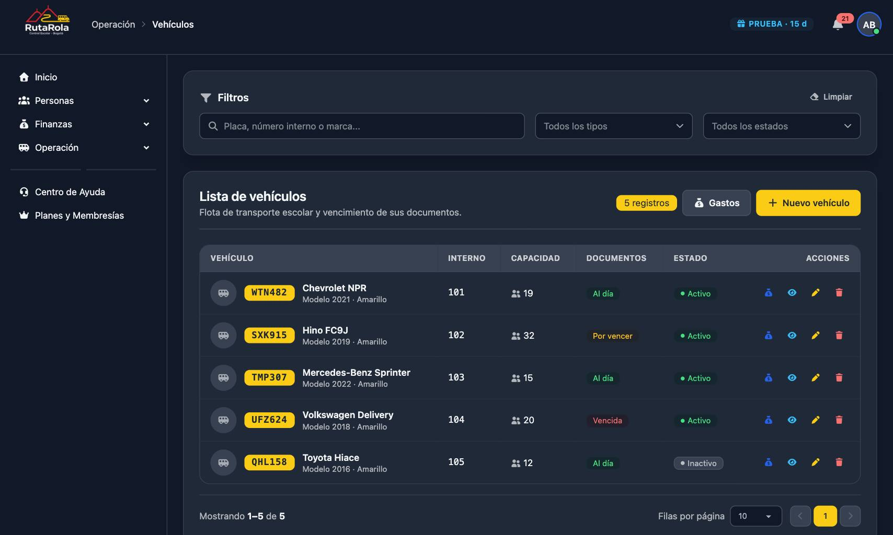
Flota con el estado de sus documentos.
Registrar un vehículo
En Operación › Vehículos toca Nuevo vehículo.
Foto opcional, Placa, Número interno, Tipo de vehículo, Capacidad (estudiantes) (solo puestos para estudiantes, sin contar conductor ni monitora), Marca, Línea, Modelo (año) y Color.
Documentos: fecha de vencimiento del SOAT, la Revisión técnico-mecánica, la Tarjeta de operación y las Pólizas RCC / RCE.
Toca Registrar vehículo.
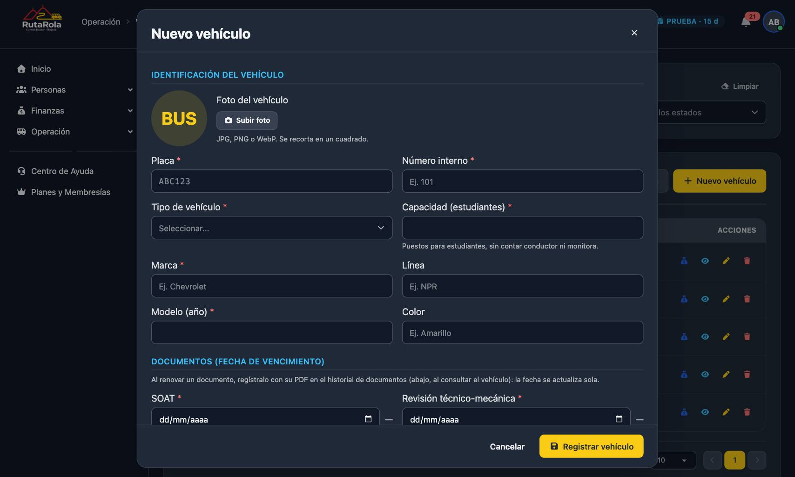
Nuevo vehículo.
Historial de documentos, novedades y gastos
Al consultar un vehículo, debajo de sus datos encuentras tres secciones:
Historial de documentos: con Registrar documento guardas cada renovación con su número, entidad, fechas y el PDF o foto (hasta 2 MB). El más reciente de cada tipo es el vigente y actualiza solo la fecha de vencimiento del vehículo.
Novedades: averías o daños que reportan el conductor y la monitora desde su app (o que registras tú). Las mueves de Pendiente a En proceso y a Resuelta escribiendo qué se hizo.
Gastos:Ver gastos abre el registro de tanqueadas, mantenimientos, repuestos, llantas, peajes, etc., con su tablero de totales.
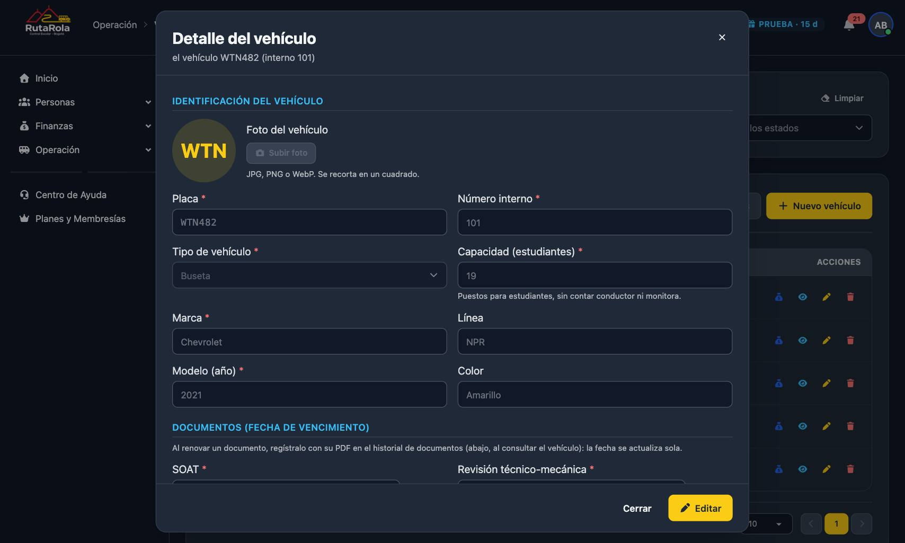
Detalle de un vehículo.
Documentos vencidosUn vehículo con algún documento vencido no se puede asignar a una ruta. RutaRola avisa desde 30 días antes en Inicio y en la campana de notificaciones.
4. Conductores y monitoras
Se registran como empleados en Personas › Empleados con Nuevo empleado:
Datos personales y de contacto (el celular es obligatorio: es el que usa la pareja de la ruta para llamar).
El tipo de empleado: Conductor o Monitora. Al conductor se le piden la categoría y el vencimiento de su licencia.
Acceso a la app: un Usuario y una Contraseña. Con ellos el conductor o la monitora entran a su Ruta del día. El tipo de empleado decide qué ve al entrar.
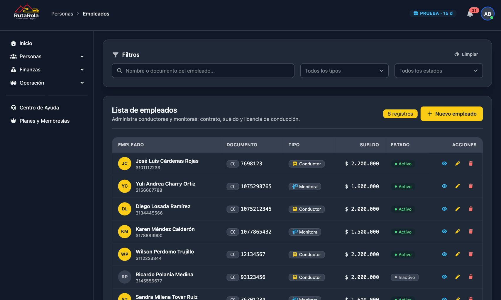
Empleados.
Operación › Conductores es una vista de consulta: cada conductor con su licencia, su vencimiento y la ruta asignada.
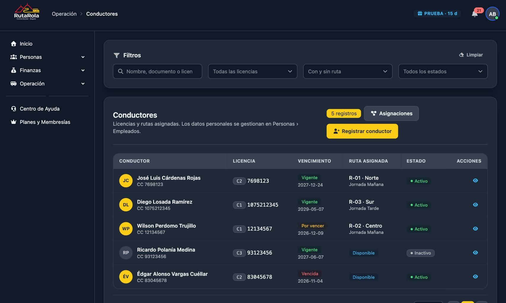
Conductores con su licencia y ruta.
5. Rutas
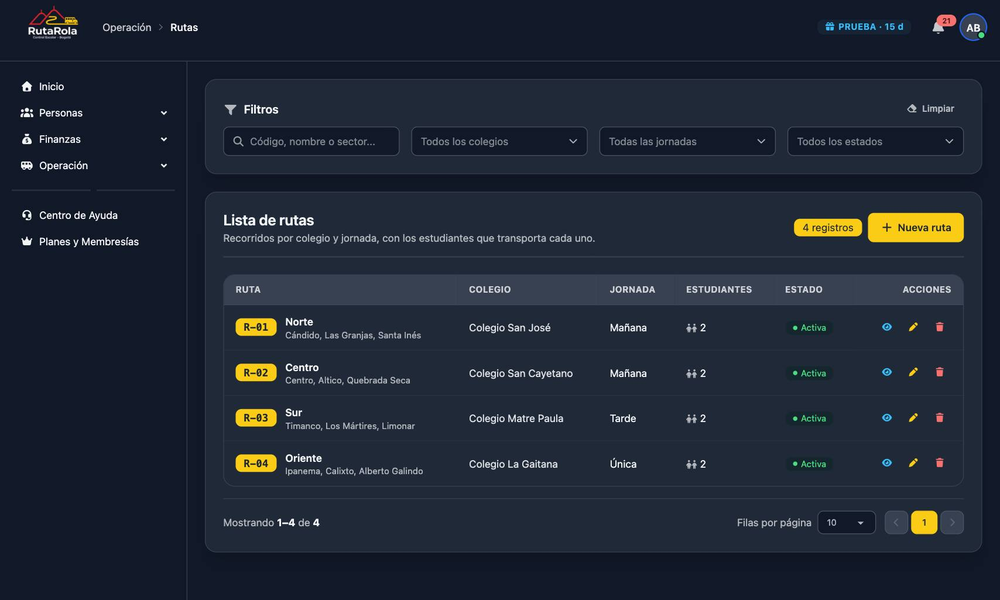
Lista de rutas.
En Operación › Rutas toca Nueva ruta. El código (R-01, R-02…) lo pone el sistema al guardar.
Escribe el Nombre (ej. “Norte”), elige el Colegio y la Jornada, y describe el Sector / barrios que recorre.
En Estudiantes de la ruta agrega los estudiantes: solo aparecen los de ese colegio y esa jornada. El orden de la lista es el orden de recogida; la entrega se hace en orden inverso.
Deja el Estado en Activo y toca Registrar ruta.
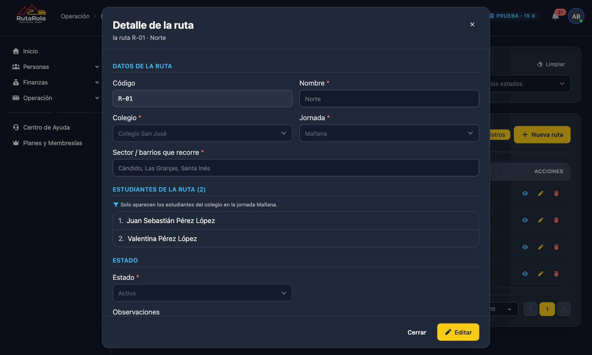
Ruta con sus estudiantes en orden.
ReglaUn estudiante no puede estar en dos rutas activas de la misma jornada.
6. Asignaciones
La asignación dice qué vehículo, qué conductor y qué monitora hacen una ruta, desde qué fecha y en qué horario. Sin asignación vigente, la ruta no le aparece a nadie en su Ruta del día.
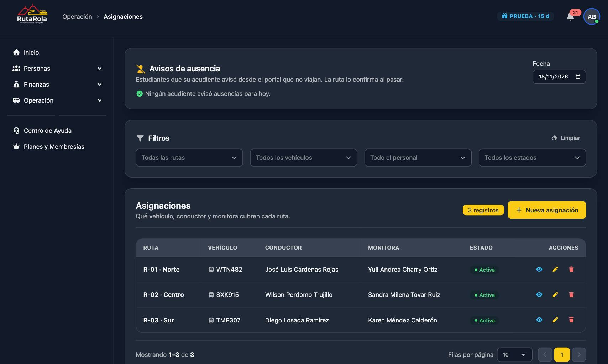
Arriba, los avisos de ausencia del día; abajo, las asignaciones.
En Operación › Asignaciones toca Nueva asignación.
Elige la Ruta y el Vehículo.
Elige el Conductor y, si hay, la Monitora.
Indica la Fecha de inicio y, si se sabe, la Fecha de fin (vacía = sin fecha de fin). Las Hora de inicio y Hora de fin vacías significan toda la jornada.
Toca Registrar asignación.
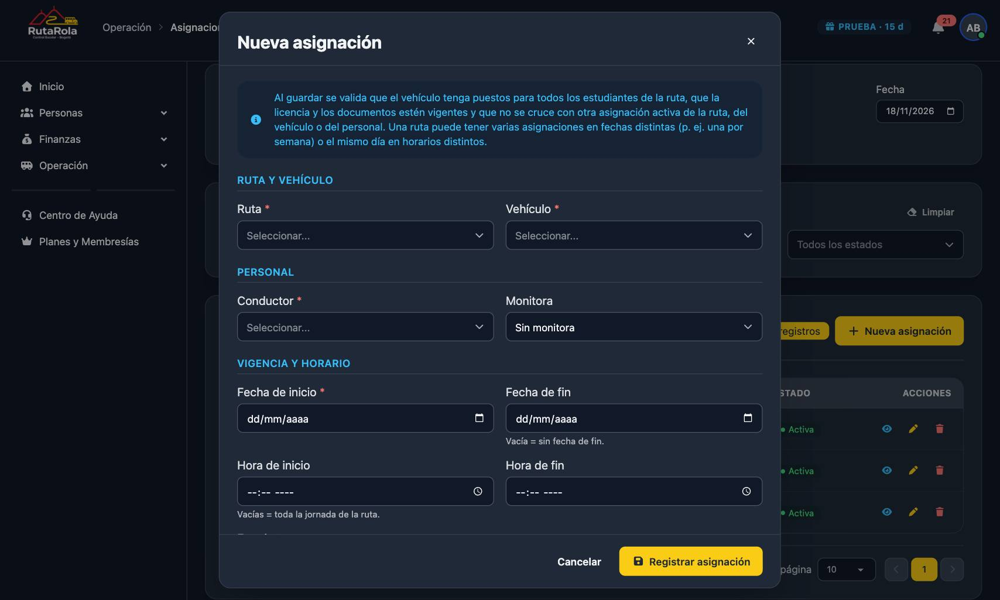
Nueva asignación.
Al guardar, RutaRola verifica
que el vehículo tenga puestos para todos los estudiantes de la ruta;
que la licencia del conductor y los documentos del vehículo estén vigentes;
que no se cruce en fechas y horas con otra asignación activa de la misma ruta, vehículo o persona.
Una ruta puede tener varias asignaciones en fechas distintas (por ejemplo, una por semana) o el mismo día en horarios distintos.
7. La Ruta del día (conductor y monitora)
El conductor y la monitora entran con su usuario desde el celular (app RutaRola o app.rutarola.com) y ven solo sus rutas de hoy.
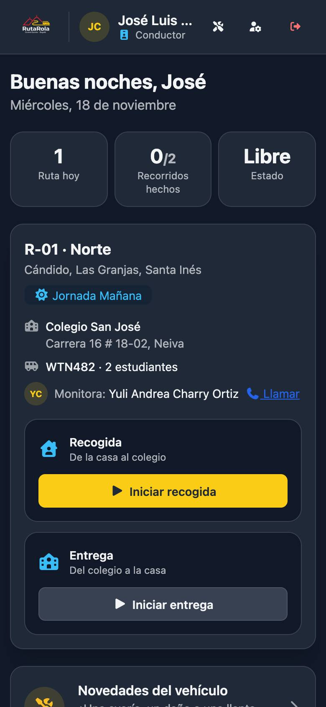
Rutas de hoy del conductor.
Cada ruta muestra el colegio, el vehículo, cuántos estudiantes lleva y la pareja de trabajo, con botón para llamar.
Para la mañana toca Iniciar recogida (de la casa al colegio); para la tarde, Iniciar entrega (del colegio a la casa). Si la pareja ya lo inició, se unen al mismo recorrido.
La pantalla muestra la próxima parada, con la foto del estudiante, su dirección, y botones de Google Maps, llamar y WhatsApp.
Marca a cada estudiante cuando sube (queda A bordo) y cuando lo dejan (Entregado), o como ausente si no está. Deshacer corrige el último paso.
La monitora (o el conductor, si va sin monitora) puede cambiar el orden de las paradas arrastrando a un estudiante. La pareja ve el cambio al instante.
Al final toca Finalizar recorrido. Solo se puede finalizar cuando nadie queda a bordo.
Ubicación GPS
Mientras el recorrido está en curso, los celulares del conductor y de la monitora comparten la ubicación. Con la app RutaRola instalada se sigue compartiendo aunque usen otra aplicación o bloqueen la pantalla; en el navegador, la pantalla debe quedar encendida.
Prepara tu teléfonoLa primera vez que inician un recorrido en la app, aparece la guía “Prepara tu teléfono”: permitir notificaciones, quitar a RutaRola del ahorro de batería y el ajuste propio de la marca del celular. Hacerlo una sola vez evita que la ubicación se pause.
Avisos de ausencia y novedades
Si un acudiente avisó que el niño no va, la ruta lo muestra en la parada con la opción “Confirmar: no va”. Desde la Ruta del día también se reportan novedades del vehículo (una avería, un daño, una llanta baja) con foto.
8. Monitoreo, historial y cronograma
Monitoreo en vivo
Operación › Monitoreo en vivo muestra en el mapa todos los recorridos en curso y se mueve en tiempo real. Si un vehículo no envía ubicación por más de 3 minutos, aparece “sin señal”. Incluido en los planes Profesional y Empresarial.
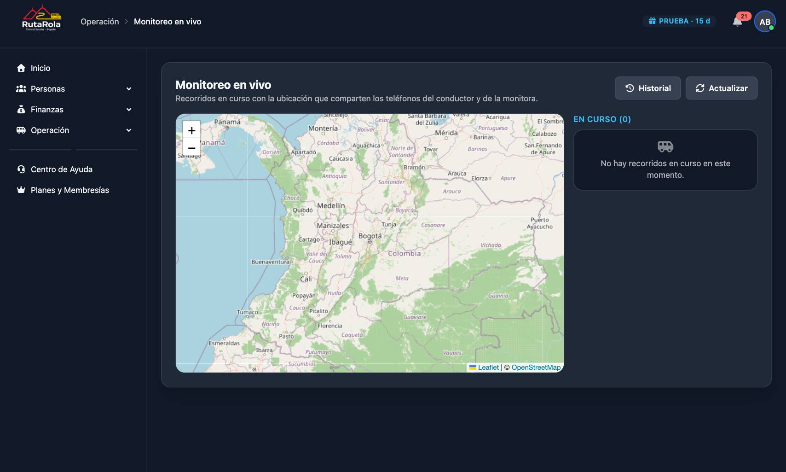
Monitoreo en vivo.
Historial de recorridos
Operación › Recorridos guarda cada recogida y entrega: quién la hizo, a qué hora subió y llegó cada estudiante, las ausencias y el trayecto en el mapa. Filtra por fechas, ruta, trayecto o estado y exporta con Exportar CSV.
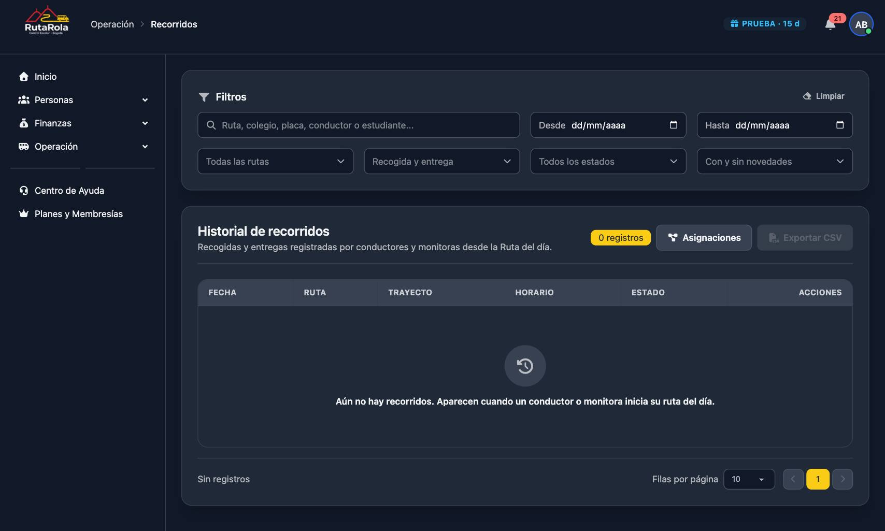
Historial de recorridos.
Cronograma
Operación › Cronograma muestra por semana, mes o año las rutas programadas, los recorridos hechos, las ausencias avisadas y los vencimientos (documentos, licencias, pagos, contratos). Toca un día y luego una ruta para ver su detalle.
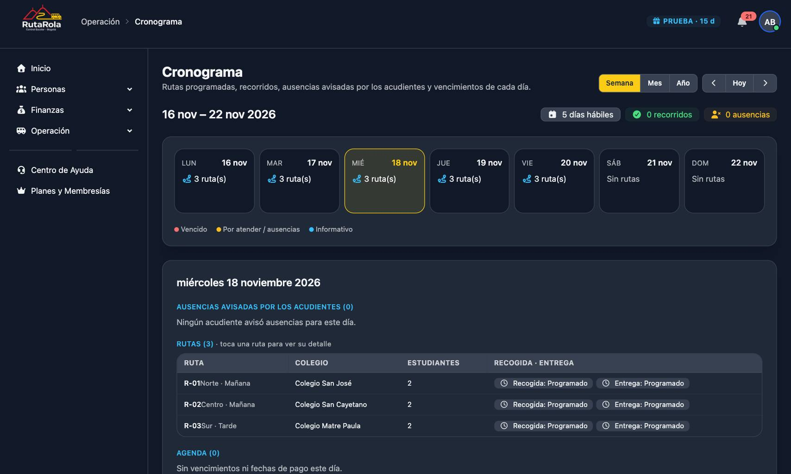
Cronograma semanal.
9. Preguntas frecuentes
El conductor no ve su ruta hoy
Revisa en Operación › Asignaciones que tenga una asignación Activa cuyas fechas incluyan hoy, y que la ruta esté Activa.
“El vehículo no tiene capacidad”
La ruta tiene más estudiantes que puestos. Usa un vehículo más grande o divide la ruta.
No me deja agregar un estudiante a la ruta
Debe ser del mismo colegio y la misma jornada de la ruta, y no estar ya en otra ruta activa de esa jornada.
La ubicación se pausa en el celular
Usa la app RutaRola instalada y completa la guía “Prepara tu teléfono” (ver la sección 7).